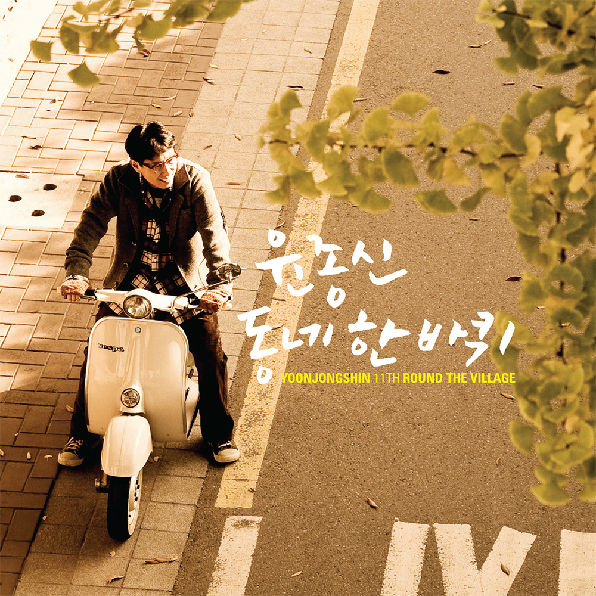

안녕하세요 티스토리 라보엠입니다.
제가 가장 좋아하는 가수는 윤종신입니다. 아니 좋아한다기보다 존경하는 가수라고 하는게 맞겠습니다. 2010년 3월부터 매달 음원을 발표하는 월간 윤종신이라는 프로젝트를 현재까지도 이어오며 윤종신은 한국 음악계의 역사가 되고 있습니다. 윤종신의 수많은 앨범중 제가 가장 좋아하는 앨범은 2008년에 발표된 11집 동네 한 바퀴 입니다. 타이틀곡 내일 할 일을 비롯해, 동네 한 바퀴, 야경, 같이 가줄래, 아이에게 들려주는 O My Baby 등 수많은 명곡이 수록된 앨범입니다. 오늘은 그중에서 동네 한 바퀴를 소개해드리겠습니다.
윤종신 동네 한 바퀴 MV
윤종신의 동네 한 바퀴 앨범은 비슷한 톤의 노래들로 엮여 있습니다. 특히 동네 한 바퀴, 같이 가줄래, 야경, 내일 할 일 이 노래들은 사랑의 씁쓸한 감정들이 그대로 녹아 있습니다. 이 곡과 함께 야경, 내일 할 일, 1월부터 6월까지도 함께 들어보시면 감정이 그대로 이어질거에요. 추천드립니다. 저도 동네 한 바퀴 돌다 오겠습니다. ^^
동네 한 바퀴 가사
계절의 냄새가 열린 창을 타고서
날 좁은 방에서 밀어냈어
오랜만에 걷고 있는 우리 동네
이제 보니 추억투성이
너와 내게 친절했던 가게아줌마
가파른 계단 숨 고르며 오른 전철역
그냥 지나치던 모두가 오늘 밤 다시 너를 부른다.
계절은 또 이렇게 너를 데려와
어느새 난 그 때 그 길을 걷다가
내 발걸음엔 리듬이 실리고
너의 목소리 들려 추억 속의 멜로디 저 하늘위로
우리 동네 하늘의 오늘 영화는
몇 해 전 너와 나의 이별 이야기
또 바뀌어버린 계절이 내게 준
이 밤 동네 한 바퀴만 걷다 올게요.
다 잊은 것 같아도
스치는 바람에도
되살아나는 추억이 있기에
내가 걷는 길 숨을 쉬네
계절은 또 이렇게 너를 데려와
어느새 난 그 때 그 길을 걷다가
내 발걸음엔 리듬이 실리고
너의 목소리 들려 추억 속의 멜로디 저 하늘위로
우리 동네 하늘의 오늘 영화는
몇 해 전 너와 나의 이별 이야기
또 바뀌어버린 계절이 내게 준
이 밤 동네 한 바퀴만 걷다 올게요
동네 한 바퀴만 걷다 올게요.
동네 한 바퀴에 널 보고 싶다
동네 한 바퀴 - 당신의 노래
‘괜찮은 사람’ 비슷하게 살고 있다고
2008년 11월, 일 년 동안 준비한 교원 임용 시험을 보고 나오던 날의 쌀쌀했던 날씨를 기억한다. 1차 시험은 객관식이었기에 합격자 발표를 기다릴 것도 없이 탈락. 수험생 카페와 구직 사이트를
yoonjongshin.com
동네 한 바퀴 앨범 커버
